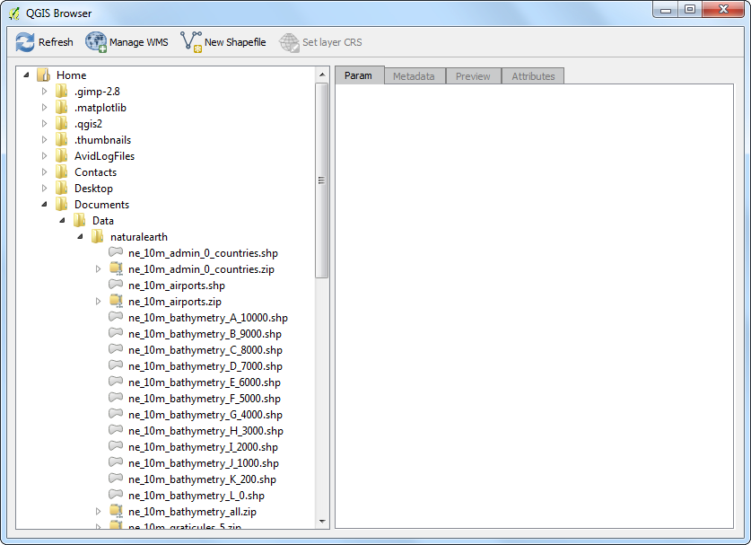

De QGIS Browser gebruiken
[ Download PDF A4 Letter ]
QGIS heeft een zelfstandige toepassing, genaamd QGIS Browser. Dit is een nuttige metgezel voor QGIS en helpt bij het beheren van gegevenssets van GIS. Gebruikers van ArcGIS kunnen er aan denken als een toepassing soortgelijk aan ArcCatalog.
De QGIS Browser lokaliseren
QGIS Browser zelfstandige toepassing
QGIS Browser is een deel van de standaard installatie van QGIS.
Windows: indien u QGIS installeerde via het installatieprogramma van OSGEO4W, zult u de QGIS Browser in uw menu Start zien.
Mac: De toepassing bevindt zich in QGIS.app/Contents/MacOS/bin/QGIS Browser.app. U kunt een symlink maken naar deze toepassing. Navigeer naar de map Application, klik met rechts op het pictogram van QGIS en selecteer Show Package Contents. Blader naar . Klik met rechts op het pictogram QGIS Browser en selecteer Make Alias. Sleep het QGIS Browser alias naar de map Applications. Nu heeft u toegang tot de QGIS Browser net als naar andere toepassingen.
Linux: U kunt de QGIS Browser starten met de opdracht qbrowser. Het bevindt zich in dezelfde map als de toepassing QGIS.

Paneel Browser in QGIS
Een gemakkelijke manier om toegang te krijgen tot de QGIS Browser is vanuit het hoofdvenster van de toepassing QGIS Desktop zelf. Het paneel Browser bevindt zich aan de onderzijde van het paneel aan de linkerzijde in QGIS. Klik op de tab Browser om de QGIS Browser te openen. Indien u de tab Browser niet ziet, schakel die dan in via (Windows en Mac) of (Linux).

Procedure
Laten we nu enkele mogelijkheden van de QGIS Browser verkennen. Schakel naar de zelfstandige toepassing QGIS Browser. Blader naar een map op uw systeem waar u enige GIS-gegevens heeft opgeslagen. U zult onmiodd3ellijk de voordelen merken van het gebruiken van de Browser. In plaats van alle ondersteunende bestanden en niet-ruimtelijke gegevens te zien, ziet u alleen de ruimtelijke lagen die worden ondersteund door QGIS. Klik op een laag om die te selecteren.

Als u een laag selecteert, zult u de Metadata op de eerste tab zien in het paneel aan de rechterkant. U kunt vanuit dit paneel snel basisinformatie ophalen over de gegevensset, zoals het aantal objecten, projectie etc.

Als u schakelt naar de tab Preview, zult u een voorbeeld van de gegevensset zien. Dit is een snelle manier om te bepalen hoe de gegevensset eruit ziet, vóór die te openen in QGIS.

De laatste tab is de tab Attributes. Hier kunt u de attributentabel van de gegevensset bekijken om een idee te krijgen van de beschikbare velden en hun waarden.

De QGIS Browser geeft u niet alleen toegang tot vector- en afbeeldingslagen op uw systeem, maar ook databases en netwerkbronnen. Als u online gegevens gebruikt via WMS, kunt u die snel bekijken binnen de browser. Vergroot de locatie WMS en u zult de bronnen zien die u heeft ingesteld. Op dezelfde wijze heeft u databases voor PostGIS, SpatialLite of MSSQL beschikbaar, u heeft daar ook toegang toe.

QGIS Browser heeft de mogelijkheid om ZIP-bestanden direct te openen en u kunt er in bladeren. Navigeer naar een map die ZIP-bestanden bevat. U zult zien dat de ZIP-bestanden ook als een ondersteunde gegevensset verschijnen en u kunt, net als elke andere gegevensset, een voorbeeld bekijken.

Een andere nuttige mogelijkheid is om bepaalde mappen op uw systeem toe te voegen als Voorkeuren. Klik met rechts op een map en selecteer Toevoegen als voorkeur.
Notitie
Toevoegen van een map aan uw voorkeuren werkt momenteel nog slechts alleen vanuit het paneel Browser in QGIS. Deze mogelijkheid is niet beschikbaar in de zelfstandige toepassing.

Na het toevoegen van de locatie als een voorkeur, kan daar snel toegang toe worden verkregen vanuit de map Voorkeuren in de Browser.

Als u eenmaal de laag hebt geselecteerd, kunt u er op dubbelklikken om hem toe te voegen aan het kaartvenster van QGIS. U kunt de laag ook slepen en neerzetten in het kaartvenster van QGIS.

U kunt terugschakelen naar het paneel Lagen vanuit het paneel aan de linker onderkant in QGIS om de toegevoegde laag te bekijken.